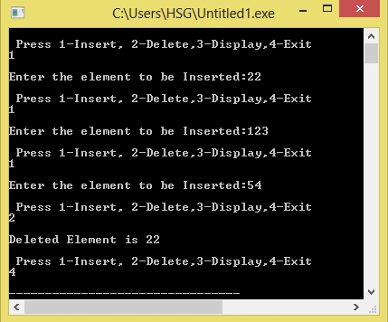

/*C Program to implement Circular Queue
#include<stdio.h>
#define SIZE 5
int Circularqueue[SIZE], front = -1, rear = -1;
Enque(int data) {
if (full())
printf("\n Overflow\n");
else
{
if (front == -1)
front = 0;
rear = (rear + 1) % SIZE;
Circularqueue[rear] = data;
}
}
int Deque()
{
int data;
if (empty())
{
printf("\nUnderflow\n");
return (-1);
}
else {
data = Circularqueue[front];
if (front == rear) {
front = -1;
rear = -1;
}
else
front = (front + 1) % SIZE;
return (data);
}
}
int full() { /* Checks if Circular Queue is Full */
if ((front == rear + 1) || (front == 0 && rear == SIZE - 1))
return 1;
return 0;
}
int empty() { /* Function to Check Circular Queue Empty */
if (front == -1)
return 1;
return 0;
}
display() { /* Function to print Circular Queue */
int i;
if (empty())
printf(" \n Empty Queue\n");
else {
printf("Front[%d]->", front);
for (i = front; i != rear; i = (i + 1) % SIZE)
printf("%d ", Circularqueue[i]);
printf("%d ", Circularqueue[i]);
printf("<-[%d]Rear", rear);
}
}
main()
{
int option, data;
do {
printf("\n Press 1-Insert, 2-Delete,3-Display,4-Exit\n");
scanf("%d", &option);
switch (option) {
case 1:
printf("\nEnter the element to be Inserted:");
scanf("%d", &data);
Enque(data);
break;
case 2:
data = Deque();
if (data != -1)
printf("\nDeleted Element is %d \n", data);
break;
case 3:
printf("\nCircular Queue is:\n\n");
display();
break;
case 4:
exit(0);
break;
default:
printf("\nInvalid Option \n\n");
break;
}
}
while (option != 4);
}
Output:
